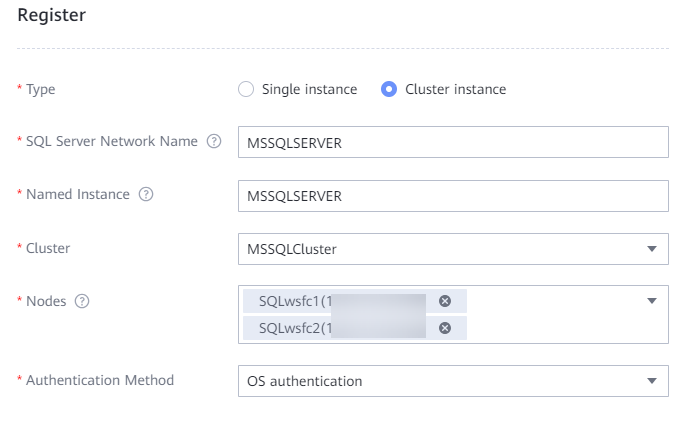
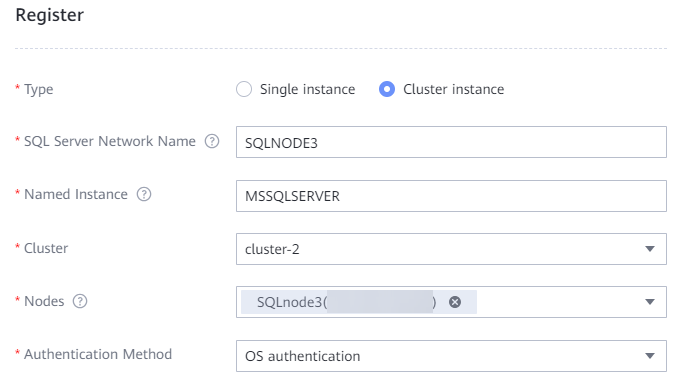

After ProtectAgent is installed on the host where the SQL Server database resides, the OceanProtect automatically discovers the SQL Server database host. You need to register the database on the management page to protect it.
Registering a Single SQL Server Database Instance
- Choose Protection > Databases > SQL Server.
- Click the Instance tab.
- Click Register to register the SQL Server database.
- Set Type to Single instance.
- Configure the database instance and its authentication information.
Table 1 describes the related parameters.
Table 1 SQL Server single-instance registration information Parameter
Description
SQL Server Network Name
If the SQL Server instance is a single-node instance, the value of this parameter is the Windows host name by default.
Instance Name
The instance name must be the same as that in the production environment, which is MSSQLSERVER by default.
Perform the following steps to query the instance name:
- Log in to the SQL Server database host.
- Go to the Sql Server Configuration Manager page.
- View SQL Server (instance name) in the services.
Hosts
Database host to be registered.
Authentication Method
Select OS authentication or Database authentication. After the configuration, the OceanProtect Appliance uses this authentication method to log in to the database.
- OS authentication: authentication based on the OS.
- Database authentication: authentication through the database administrator username and password.
Database Username
This parameter is displayed when Authentication Method is set to Database authentication.
Name of the database administrator.
Database Password
This parameter is displayed when Authentication Method is set to Database authentication.
Password of the database administrator.
- Click OK.
Registering a SQL Server Cluster Instance
Prerequisites

Data on all nodes in the cluster must be synchronized.
Procedure
- Create a cluster.
- On the SQL Server page, click the Cluster tab.
- Click Register.
- On the Register page, customize the cluster name and select the cluster node.
- Click OK.
- Register a cluster instance.
- On the SQL Server page, click the Instance tab.
- Click Register.
- Set Type to Cluster instance.
- Configure the database instance and its authentication information.
Table 2 describes the related parameters.
Table 2 SQL Server cluster instance registration information Parameter
Description
SQL Server Network Name
- If the SQL Server instance is an Always On availability group, the value of this parameter is the Windows host name by default.
- If the SQL Server instance is a Windows Server Failover Cluster (WSFC), this parameter uses the SQL Server Network Name value customized when the WSFC is set up.
Perform the following steps to query this parameter:
- Log in to any SQL Server database host in the cluster.
- Log in to Microsoft SQL Server Management Studio as a database administrator.
- Right-click the host and choose Properties from the shortcut menu.
- On the Server Properties page that is displayed, query the value of Name.
Instance Name
The instance name must be the same as that in the production environment, which is MSSQLSERVER by default.
Perform the following steps to query the instance name:
- Log in to the SQL Server database host.
- Go to the Sql Server Configuration Manager page.
- View SQL Server (instance name) in the services.
Cluster
Database cluster to be registered.
Nodes
Host where the database instance resides.
Authentication Method
Select OS authentication or Database authentication.
- OS authentication: authentication based on the OS.
- Database authentication: authentication through the database administrator username and password.
Database Username
This parameter is displayed when Authentication Method is set to Database authentication.
Name of the database administrator.
Database Password
This parameter is displayed when Authentication Method is set to Database authentication.
Password of the database administrator.
- Click OK.
Related Operations
- If the cluster is of the WSFC type, select all nodes.

- If the cluster is of the availability group type, register each node in the cluster as a cluster instance.
